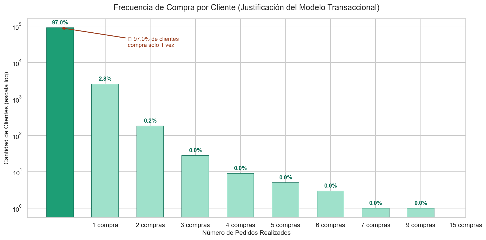
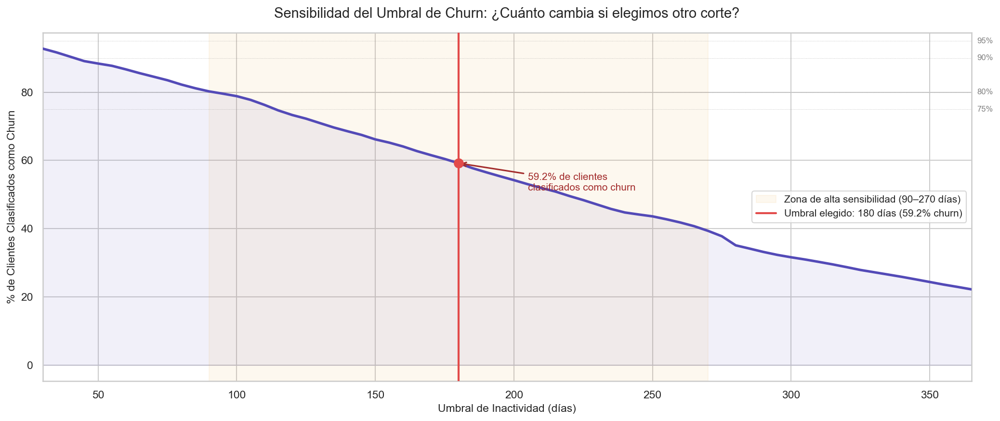
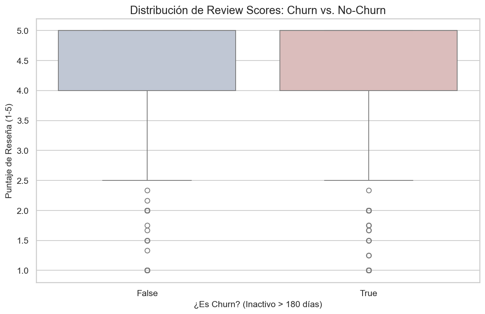
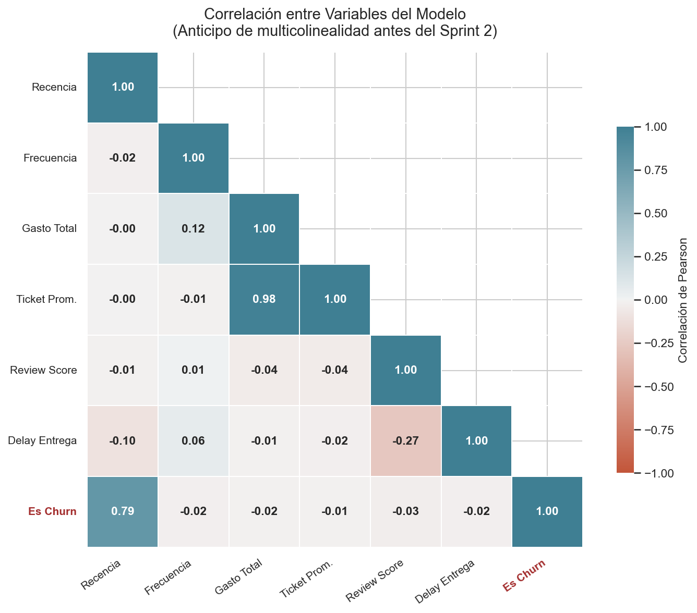
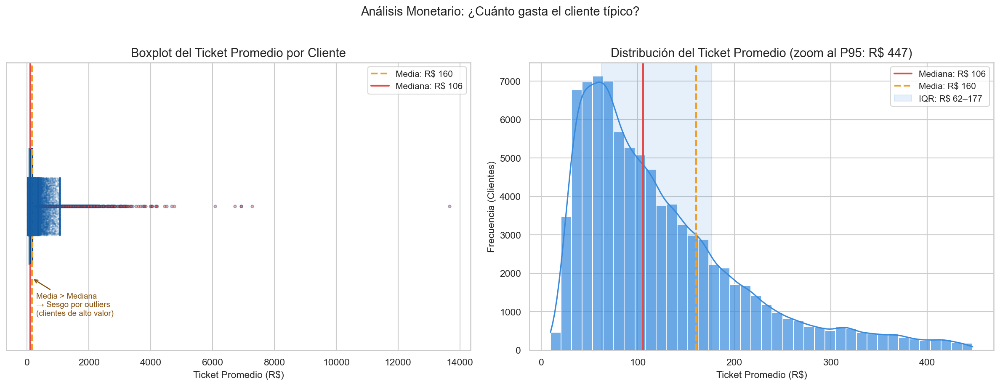

Formulación del problema de negocio, EDA inicial, hipótesis, variables y métricas base para predicción de abandono de clientes.
Maestría en Ciencia de Datos · Olist Brazilian E-Commerce Dataset
is_churn
is_churnis_churn = 1 si el cliente
no realizó ninguna compra en los 180 días posteriores a su última
orden.
| Umbral | % Churn | # Clientes |
|---|---|---|
| 90 días | 80.2% | 74,899 |
| 120 días | 73.3% | 68,438 |
| 150 días | 66.2% | 61,761 |
| 180 días ← | 59.2% | 55,252 |
| 240 días | 44.7% | 41,766 |
| 365 días | 22.2% | 20,738 |



| Variable | r | Señal |
|---|---|---|
| Recencia | +0.794 | dominante |
| Review Score | -0.027 | débil |
| Delay Entrega | -0.016 | débil |
| Frecuencia | -0.016 | débil |
| Gasto Total | -0.015 | débil |
| Ticket Prom. | -0.013 | débil |
| Variable | Tipo | Rol |
|---|---|---|
recencia |
num | Base del label |
is_churn |
target | Variable objetivo |
total_orders |
num | Frecuencia RFM |
gasto_total |
num | Valor monetario |
ticket_promedio |
⚠ revisar | r=0.983 con gasto |
review_score |
num | Satisfacción |
delivery_delay |
num | Logística |
ticket_promedio
por multicolinealidad. Agregar estado_uf y product_category.

| Métrica | Baseline | Meta Sprint 3 |
|---|---|---|
| Accuracy | 59.2% | — |
| Recall (Churn) | 0.00 | > 0.65 |
| F1-Score | 0.00 | > 0.60 |
| AUC-ROC | 0.50 | > 0.75 |
| Gini | 0.00 | > 0.50 |
* Predice siempre clase mayoritaria. Accuracy 59% es engañoso con clases desbalanceadas.
| KPI | Valor |
|---|---|
| Tasa de churn (180d) | 59.2% |
| Tasa de retención | 40.8% |
| Review score — Churn | 4.12 / 5 |
| Review score — Retenido | 4.20 / 5 |
| Ticket mediano global | R$ 105.63 |
| Clientes en churn | 55,252 |
ticket_promedioestado_uf y product_category con encodingsklearn.PipelineMaestría en Ciencia de Datos · M13 Grupo 7 · Olist Brazilian E-Commerce Dataset